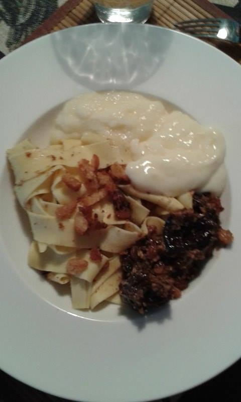

Sara's Karfreitagsnudeln (Good Friday's Pasta)
Presumably, there are as many Good Friday dishes as there are families in Germany. Personally, I love to indulge in this Palatinate tradition which - as a completely sweet dish - is perfectly suitable for children and therefore reminds me of my childhood and my great-grandma with whom I greatly associate this dish. While I could eat Karfreitagsnudeln all year long, fitting the preparation into the rhythm of Holy Week is essential for the cosiness that typically comes with this dish.
Ingredients:
white flour - eggs - dry bread - butter - dry fruit - milk - sugar - custard powder
Mode of preparation

Soak the dry fruit with water on Holy Thursday. On Good Friday, start making the pasta in the morning by kneading flour and eggs until the texture reminds you of pasta dough. Flatten the dough and cut into thin strips. Prepare the Vanillesauce according to the procedure given on the Vanillepuddingpulverpackung (I had to include a long German word but if you don't have the chance to buy Vanillepuddingpulver, custard will work as well). Just before lunchtime, boil the pasta and cut the dry bread into tiny cubes. Roast the bread cubes in butter (be generous with butter! And with bread cubes. They are the most important ingredient of this). Serve the pasta with Vanillesauce (custard), bread cubes on top and dry fruit as a side. Guten Appetit!